Ma spirale · Mode d’emploi
Ma spirale, pas à pas
Tout ce qu’il faut pour bien commencer, écran par écran, avec l’exemple de Léa. Tu peux y revenir chaque fois que tu en as besoin.
À quoi sert Ma spirale
Quand quelque chose remonte, tu as un endroit où aller. Tu déposes ce que tu ressens, avec tes mots. Tu vois d’où ça vient, dans ta vie et dans ta lignée. Tu le libères, à ton rythme.
Ma spirale sert pour ce qui se répète : la même scène avec d’autres personnes, une émotion bien plus grande que ce qui vient d’arriver, une peur qui revient. Pour une émotion passagère, une contrariété d’un jour, tu n’as pas besoin de créer un schéma : ta note du jour suffit.
1Installe Ma spirale sur ton téléphone
Rien à télécharger dans un magasin d’applis : Ma spirale s’ouvre dans ton navigateur. Ajoute-la à ton écran d’accueil, elle s’ouvre ensuite comme une appli, avec sa barre en bas.
- Ouvre Ma spirale sur ton téléphone et connecte-toi.
- Sur iPhone (Safari) : touche le bouton Partager, puis Sur l’écran d’accueil, puis Ajouter.
- Sur Android (Chrome) : touche le menu ⋮ en haut à droite, puis Installer l’application (ou Ajouter à l’écran d’accueil).
- Ouvre-la ensuite depuis son icône.
Sur ordinateur, tes espaces sont à gauche. Ce que tu écris d’un côté se retrouve de l’autre.
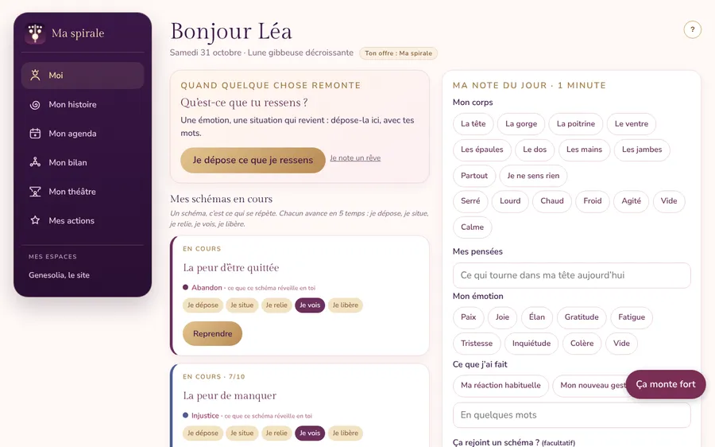
Tes six espaces, dans la barre en bas : Moi, Mon histoire, Mon agenda, Mon bilan, Mon théâtre, Mes actions.
2Moi
C’est ton accueil. En haut, « Qu’est-ce que tu ressens ? » : quand quelque chose remonte, touche Je dépose ce que je ressens. Tu peux aussi noter un rêve au réveil.
Dessous, Mes schémas en cours : chacun montre où tu en es dans ses 5 verbes. Touche Reprendre pour avancer. Quand tu réagis autrement face au même thème, le schéma rejoint Devenus spirale.
Ma note du jour, en une minute : ton corps, tes pensées, ton émotion, ce que tu as fait. Au fil des jours, tu vois ce qui revient.
Le petit ? en haut de chaque écran rouvre l’aide « Comment ça marche ».
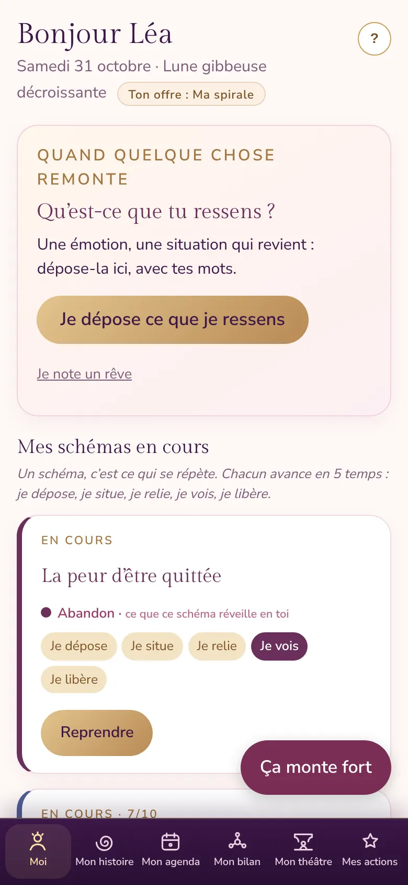
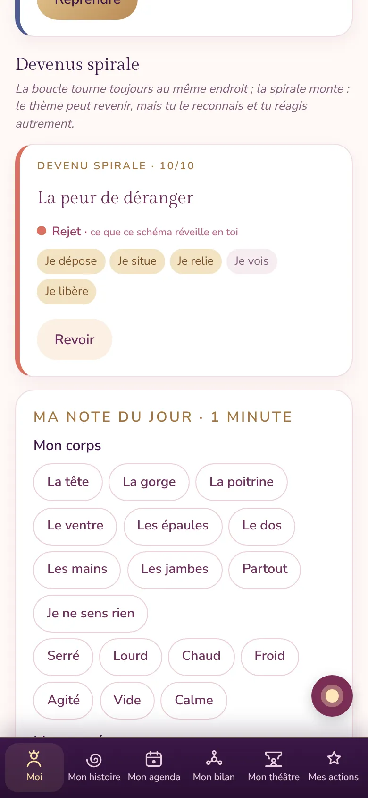
3Mon histoire
Mes personnes. Au départ, trois onglets : Toi, Ma mère, Mon père. Pour chacun, note quelques moments de vie : l’âge, ce qui s’est passé, ce qui a été ressenti. Même si tu en sais peu, c’est utile.
Pour les autres, touche + Ajouter quelqu’un : une grand-mère, un frère, une tante, mais aussi un·e ami·e, un·e ex, un·e patron·ne.
Ma frise. Ta vie en haut, ta lignée en dessous, par âge. Elle montre la première fois que c’est arrivé et toutes les autres. Quand tu as vécu la même chose au même âge qu’une personne de ta lignée, un trait doré apparaît.
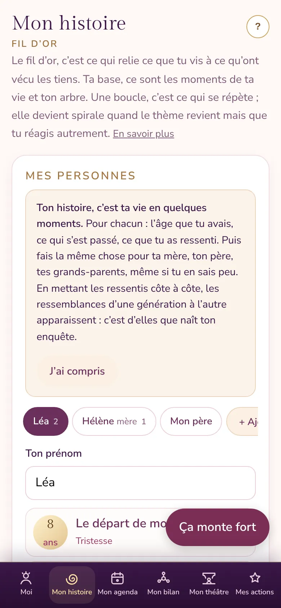
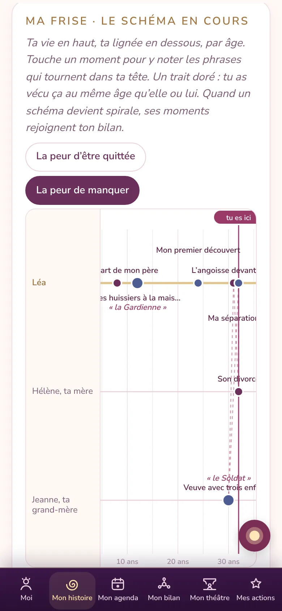
4Mon agenda
Ton mois, jour par jour : les dates de ta lignée et celles qui reviennent, tes ressentis, tes libérations, tes jours personnels.
Touche un jour pour voir ce qui s’y passe. La Légende, sous le calendrier, explique chaque petit point de couleur.
En bas, Ton chemin du mois résume ce que tu as compris et libéré.
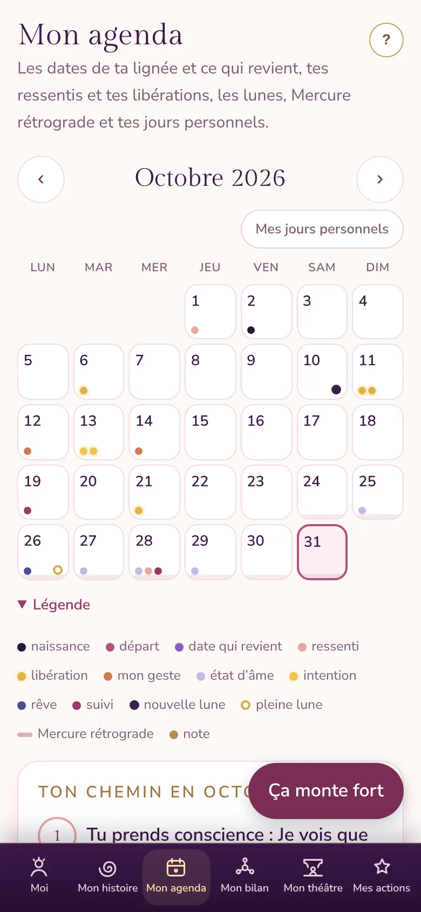
5Mon bilan
Il s’ouvre sur Ma famille et moi : chaque sphère est une personne dont tu as parlé. Touche-la pour dire le lien que tu ressens aujourd’hui : lien de paix, lien mitigé (même avec de l’amour), ou pas encore regardé.
Mes mois garde ton travail mois par mois. Ton chemin compte tes ressentis déposés, tes schémas et ceux devenus spirale.
Au fil du temps, tu vois ce qui s’allège.
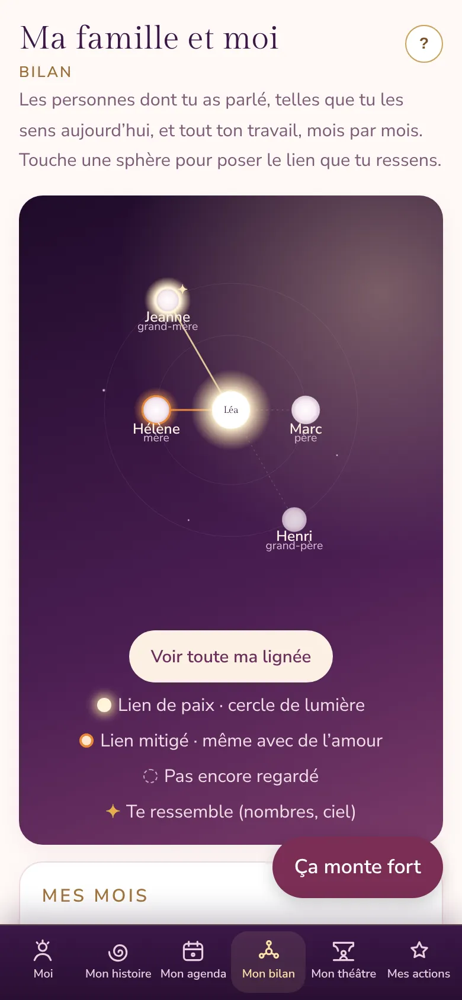
6Mon théâtre
Tu crées une pièce (Léa a appelé la sienne « Les hommes de ma vie »), puis tes personnages : des personnes de ta lignée et des personnes de ta vie, avec un nom et une couleur.
Fais-les glisser sur la scène, plus près ou plus loin de toi, là où tu les sens. Touche un personnage pour noter ce que tu ressens de lui ou d’elle, depuis ta place.
Un lien relie deux personnes que tu ressens de la même façon : « Tu ressens Tom comme tu ressens ton père : froid. » C’est là que tu vois ce qui se rejoue.
Garde une photo de ta scène : plus tard, tu verras les liens s’affiner.
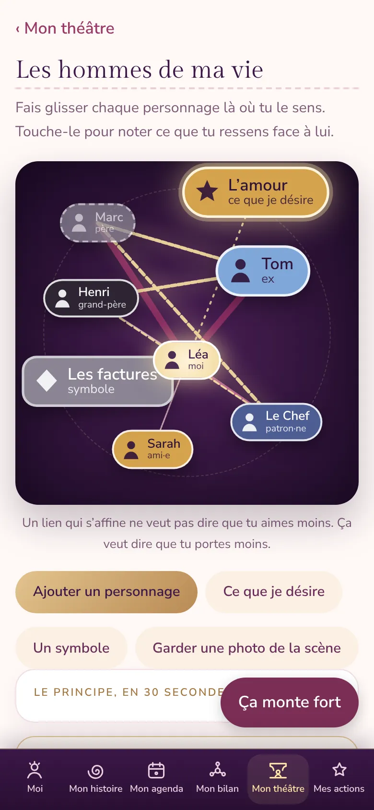
7Mes actions
Les protocoles, prêts à suivre, rangés selon ce que tu vis : Je veux libérer (la mémoire de ma vie, la mémoire de ma lignée, quand ça revient plus fort), et Ça ne va pas, maintenant.
Ils se remplissent avec ta fiche : ton âge la première fois, la personne de ta lignée, le nom de ton schéma. Tu n’as rien à inventer.
Si ça monte fort, la respiration guidée avec la sphère t’aide à revenir ici et maintenant.
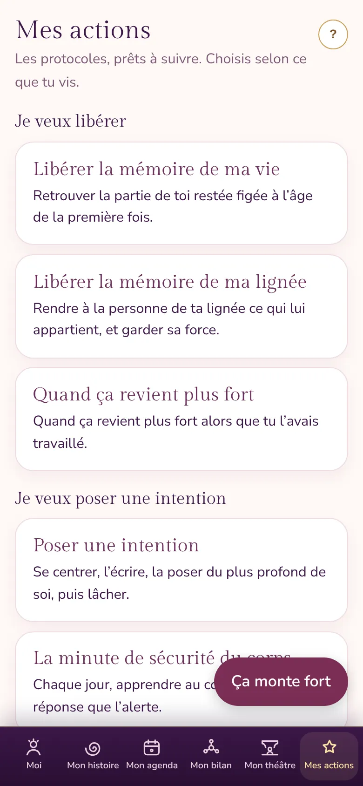
8La fiche d’un schéma, en 5 verbes
Un schéma, c’est ce qui se répète. Chaque schéma a sa fiche, qui avance en cinq temps : Je dépose · Je situe · Je relie · Je vois · Je libère. Tu n’as pas à tout faire le même jour : la fiche te montre ce qui manque.
Tout commence par un ressenti
Touche Je dépose ce que je ressens. Trois questions suffisent : ce qui s’est passé, ce que tu ressens, où tu le sens dans ton corps.
La première fois, l’appli te demande « Comment tu l’appelles ? » : c’est le nom de ton schéma, avec tes mots. Les fois suivantes, tu choisis simplement le schéma que ça rejoint.
Léa : « Mon amie a annulé notre week-end au dernier moment, je me suis sentie comme une petite fille laissée sur le quai. » Tristesse, solitude. Elle l’appelle « La peur d’être quittée ».
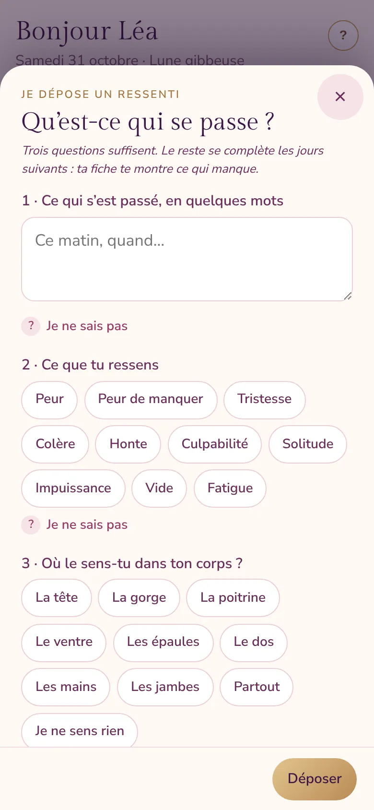
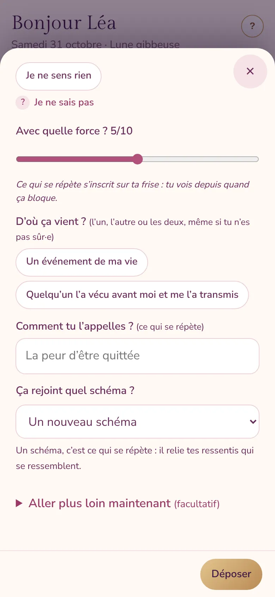
-
Je dépose
Tes ressentis, rangés par date. Tu précises ce que ça touche, la phrase que tu te dis, où tu le sens dans ton corps.
Léa choisit « On me laisse » : la phrase qui revient chaque fois.
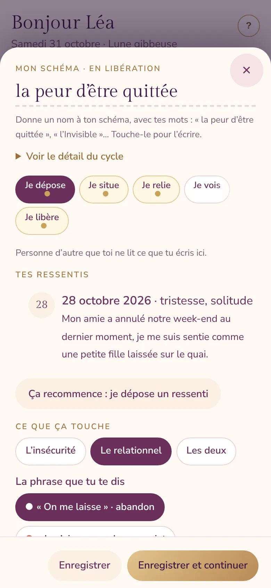
-
Je situe
Ta frise de vie : la première fois que tu as ressenti ça, puis les autres fois. Tu peux donner un nom à ce qui se joue, pour le regarder de l’extérieur.
Puis ta scène : qui est en jeu ? Comment tu le ou la ressens, depuis ta place ? Près de toi ou loin ?
Léa : la première fois, à 8 ans, le départ de son père (« la Petite fille »). Puis à 31 ans : « Il me quitte par message ».
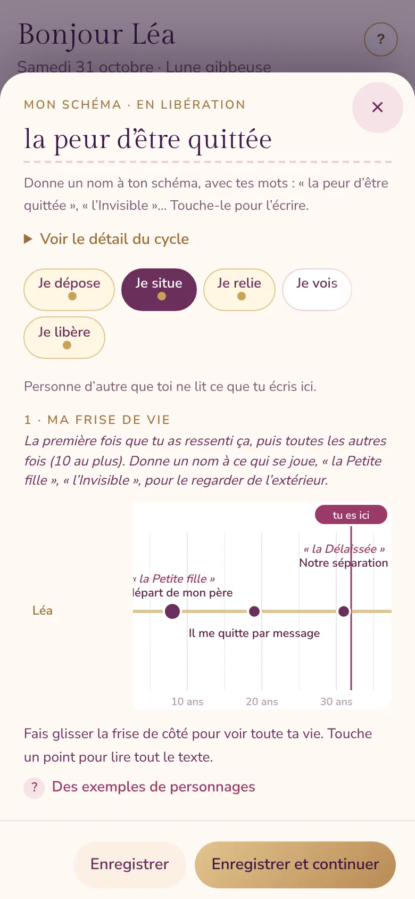
-
Je relie
D’abord les liens que tu as déjà posés. Puis l’appli te propose des pistes, toujours sous forme de question : « Tiens, comme… ? ». Tu réponds oui, peut-être ou non. Tu peux aussi ajouter un lien toi-même.
Léa : « Tiens, comme Hélène, ta mère ? » Hélène a vécu la même solitude à 32 ans, à son divorce. Léa répond oui.
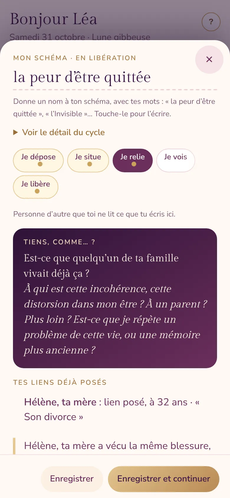
-
Je vois
La fiche rassemble ce qui se répète, la première fois, la personne avec qui ça résonne. Tu écris ce que tu comprends maintenant, en une phrase, avec tes mots.
Léa : « Je vois que chaque fois qu’on s’éloigne, je redeviens la petite fille qui attend sur le quai. »
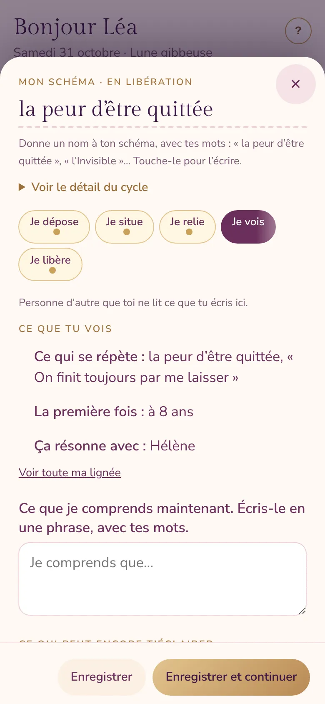
-
Je libère
Deux protocoles, déjà remplis avec ta fiche : la mémoire de ma vie (la première fois), puis la mémoire de ma lignée (rendre à la personne ce qui lui appartient, et garder sa force). Ensuite, un petit geste concret dans les 48 heures.
Léa libère d’abord la petite fille de 8 ans, puis rend à Hélène, sa mère, la peur d’être quittée.
Quand le thème revient mais que tu réagis autrement, ton schéma devient spirale.
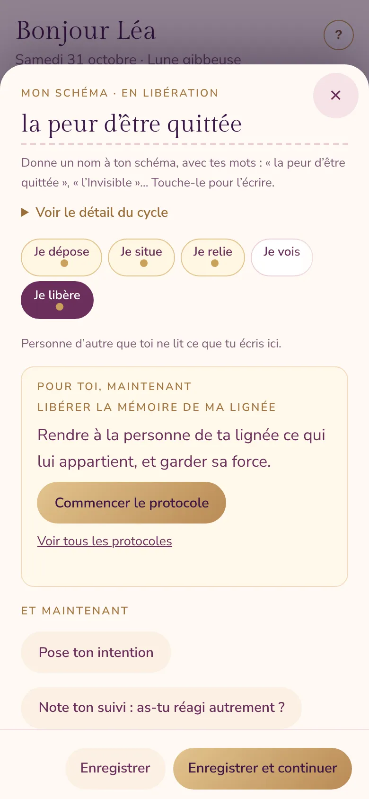
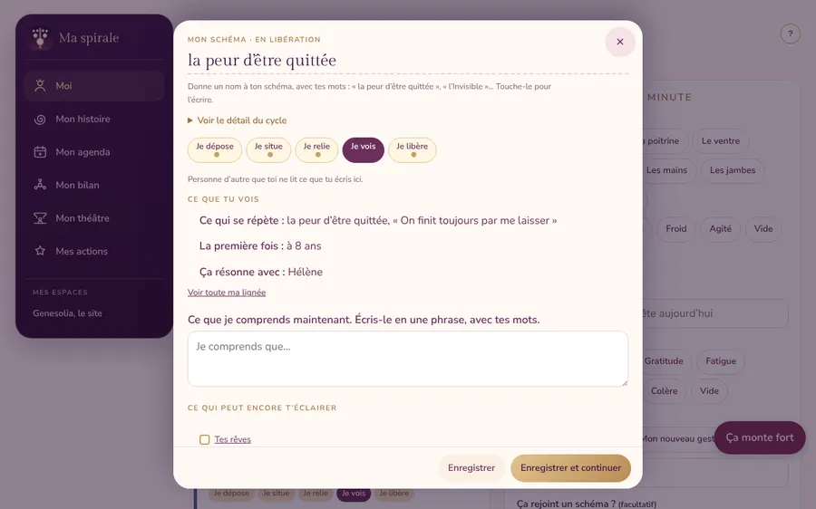
9Si ça monte fort
Le bouton Ça monte fort reste en bas de chaque écran. Quand tu déposes un ressenti très fort, l’appli te le propose aussi d’elle-même, avant tout le reste.
- Pose les pieds au sol.
- Respire avec la sphère, trois fois, lentement.
- Nomme cinq objets autour de toi, à voix haute.
- Tu peux reprendre un autre jour : rien ne presse.
Si c’est trop lourd à porter seul·e, parles-en à quelqu’un maintenant : une personne de confiance, ou une ligne d’écoute gratuite, ouverte jour et nuit (3114 en France).
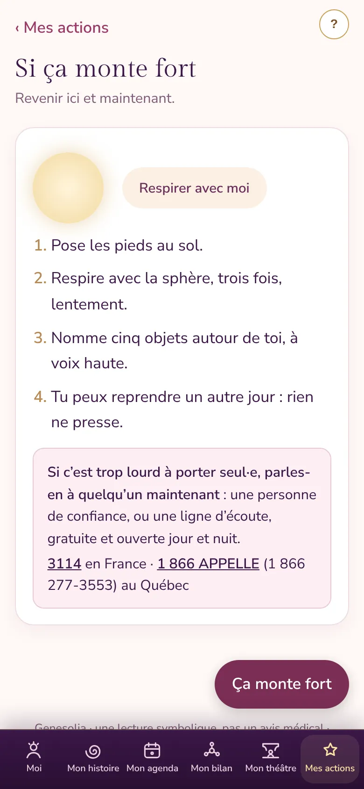
10« Je ne sais pas » : une aide à chaque question
Sous chaque question où l’on peut bloquer, touche Je ne sais pas : une aide s’ouvre. Des débuts de phrase (« Aujourd’hui, quand… », « J’ai senti… », « J’aurais voulu… »), des mots pour tes émotions, des pistes pour écouter ton corps, les périodes de ta vie pour retrouver un âge.
Trois mots suffisent. Tu complètes plus tard.
11Ce qui reste privé
- Personne d’autre que toi ne lit ce que tu écris.
- Pour le retrouver sur tous tes appareils, ce que tu écris est gardé dans ton espace Genesolia, privé, seulement avec ton accord. Sans accord, tout reste sur ton appareil.
- Tu peux tout télécharger ou tout effacer, en bas de l’écran Moi.
- Tes rêves restent privés. Seuls ceux que tu choisis de partager, sans ton nom, peuvent servir à écrire des articles du blog.
- Dans la démo de Léa, rien n’est enregistré.
12Questions fréquentes
Je n’ai pas de souvenirs de mon enfance.
Tu peux avancer quand même. Laisse venir l’âge que tu te sens, même flou. « Avant mes souvenirs » est une vraie réponse : elle t’oriente vers ta lignée.
Je connais mal ma famille.
Note ce que tu sais, même peu. Si tu ne connais pas ta lignée, tu travailles avec la famille qui t’a élevé·e. Une case vide est aussi une information.
Ça revient après une libération. C’est normal ?
Oui. Ce n’est pas un retour en arrière : c’est souvent une couche plus profonde qui se montre. Rouvre ton schéma, et suis le protocole « Quand ça revient plus fort », dans Mes actions.
Je peux l’utiliser sur mon téléphone et mon ordinateur ?
Oui. Connecte-toi avec le même compte : une fois ton accord donné, tu retrouves tout ce que tu as écrit sur tes deux appareils.
Est-ce que ça remplace un·e professionnel·le ?
Non. Ma spirale propose une lecture symbolique et des exercices d’introspection, à faire seul·e, à ton rythme. Elle ne remplace pas un avis médical ou psychologique. Si une histoire est trop lourde, parles-en à une personne de confiance ou à un·e professionnel·le de l’accompagnement.
À toi de jouer
Regarde d’abord comment Léa a fait, puis ouvre ton espace.
Ouvrir Ma spirale Essayer la démo de Léa Voir l’abonnement
Pas encore abonné·e ? 7 jours offerts, puis 4,99 € par mois avec l’offre de Noël. Sans engagement.